화약취급기능사 (2012-10-20 기출문제)
1과목: 화약 및 발파
1. 저항 1.4[Ω]의 전기뇌관 10개를 병렬결선하여 제발시키려면 소요전압은 얼마인가? (단, 발파모선의 저항은 1m당 0.021[Ω], 발파모선의 총연장 100m, 발파기의 내부저항 0, 소요전류는 2[A]이다.)
- 32.2 [V]
- 44.8 [V]
- 56.3 [V]
- 112[V]
(정답률: 27%)

2. 질산암모늄을 함유하지 않은 스트레이트 다이나마이트를 장기간 저장하면 NG와 NC의콜로이드화가 진행되어 내부의 기포가 없어져서 다이나마이트는 둔감하게 되고 결국에는 폭발이 어렵게 된다. 이와 같은 현상을 무엇이라 하는가?
- 과화
- 노화
- 질산화
- 니트로화
(정답률: 55%)
3. 다음과 같은 조건에서 2자유면 계단식 발파 (benchblasting)를 실시하고자 한다. 장약량은 얼마인가?
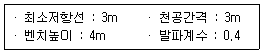
- 11.4kg
- 12.4kg
- 13.4kg
- 14.4kg
(정답률: 48%)
4. 흙의 전단강도를 감소시키는 요인으로 옳지 않은 것은?
- 공극수압의 증가
- 팽창에 의한 균열
- 흙 다짐의 불충분
- 굴착에 의한 흙의 일부제거
(정답률: 56%)
5. 비전기식 뇌관의 특징에 대한 설명으로 옳지 않은 것은?
- 결선이 단순, 용이하여 작업능률이 높다.
- 무한 단수를 얻을 수 있다.
- 전기뇌관과 다르게 내부에 연시장치를 가지고 있지 않다.
- 도통시험기나 저항시험기로 뇌관의 결선여부를 확인할 수 없다.
(정답률: 40%)
6. 다음 중 경사고 심빼기 발파방법이 아닌 것은?
- 코로만트 심빼기
- 부채살 심빼기
- 노르웨이식 심빼기
- 삼각 심빼기
(정답률: 45%)
7. 하나의 약포가 폭발 하였을 때, 공기, 물, 기타의 것을 거쳐서 다른 인접한 약포가 감응, 폭발하는 현상을 무엇이라 하는가?
- 기폭
- 순폭
- 전폭
- 불폭
(정답률: 53%)
8. 발파시 대피장소의 조건으로 적절하지 않은 것은?
- 경계원으로부터 연락을 받을 수 있는 곳
- 발파로 인한 비석이 날아 오지 않는 곳
- 발파지점이 가까워서 쉽게 접근할 수 있는 곳
- 발파의 진동으로 천반이나 측벽이 무너지지 않는 곳
(정답률: 70%)
9. 화약류의 선정 방법에 대한 설명으로 옳지 않은 것은?
- 강도가 큰 암석에는 에너지가 큰 폭약을 사용하여야 한다.
- 후생 가스가 문제되는 광산에서는 후생 가스가 적은 초유폭약(ANFO)를 사용하여야 한다.
- 장공 발파에는 비중이 작은 폭약을 사용하여야 한다.
- 번 심빼기(Burn cut)에는 순폭도가 좋은 폭약을 사용하여야 한다.
(정답률: 50%)
10. 발파를 이용하여 옥석을 파쇄하는 것을 소할 발파라 한다. 다음 중 소할 발파법에 해당하지 않는 것은?
- 미진동법
- 복토법
- 사혈법
- 천공법
(정답률: 53%)
11. 다음 중 쿠션 블라스팅법(Cushion blasting)의 특징에 대한 설명으로 옳지 않은 것은?
- 라인 드릴링법 보다 천공간격이 좁아 천공비가 많이 든다.
- 견고하지 않은 암반의 경우나 이방성 암반에도 좋은 결과를 얻을 수 있다.
- 파단선의 발파공에는 구멍의 지름에 비하여 작은 약포지름의 폭약을 장전한다.
- 주요 발파공을 발파한 후에 쿠션 발파공을 발파한다.
(정답률: 32%)
12. 다음 중 집중발파(조합발파)의 특징으로 옳지 않은 것은?
- 암석이 강인하고 일정한 절리가 없는 암석에 이용할 수 있다.
- 단일 발파보다 동일 장약량에 비해 많은 채석량을 얻는다.
- 파괴암석의 비산이 적다.
- 최소저항선을 감소시킬수 있다.
(정답률: 43%)
13. 화약류를 용도에 의해 분류할 때 다음 중 발사약에 해당하는 것은?
- 무연화학
- 뇌홍
- TNT
- 테트릴
(정답률: 52%)
14. 전기뇌관의 성능시험 중 납판시험에서 사용되는 납판의 두께로 옳은 것은?
- 4mm
- 4cm
- 6mm
- 6cm
(정답률: 48%)
15. 암반분류법인 RMR, 분류법의 구성인자에 해당하지 않는 것은?
- 암질지수(RQD)
- 불연속면 상태
- 지하수 상태
- 암석의 인장강도
(정답률: 46%)
16. 다음 중 비산의 중요한 원인에 해당하지 않은 것은?
- 단층, 균열, 연약면 등에 의한 암석의 강도저하
- 발파작업시 지나치게 큰 용량의 발사기 사용
- 점화순서 착오에 의한 지나치게 긴 지발시간
- 과다한 장약량
(정답률: 37%)
17. 다음 중 발열제로 사용되는 것은?
- DNN
- AL
- NaCl
- DDNP
(정답률: 41%)
18. 누두공 시험에서 누공공의 모양과 크기에 영향을 미치는 요소로 옳지 않은 것은?
- 발파기의 용량
- 암반의 종류
- 폭약의 위력
- 약실의 위치
(정답률: 52%)
19. 전색물의 구비조건으로 옳지 않은 것은?
- 발파공백과 마찰이 작을 것
- 단단하게 다져질 수 있을 것
- 재료의 구입과 운반이 쉬울 것
- 연소되지 않을 것
(정답률: 41%)
20. 다음 발파이론 중 자유면에서 반사 응력파에 의한 인장파괴와 가장 관계가 깊은 것은?
- 홉킨슨 효과(Hopkinson effect)
- 노이만 효과(Neumann effect)
- 측벽효과(Channel effect)
- 디커플리효과(Decoupling effect)
(정답률: 58%)
2과목: 화약류 안전관리 관계 법규
21. 다음 중 화약류의 폭발 속도 측정시험법에 해당하지 않는 것은?
- 노이만 법
- 도트리쉬 법
- 메테강 법
- 전자관 계수기법
(정답률: 34%)
22. 다음 중 질산에스테를에 속하는 것은?
- 피그린산
- 펜트라이트
- 테트릴
- 헥소겐
(정답률: 42%)
23. 펜트라이트를 심약으로 사용하는 P-도폭선을 몇 종 도폭선에 해당되는가?
- 제1종 도폭선
- 제2종 도폭선
- 제3종 도폭선
- 제4종 도폭선
(정답률: 56%)
24. 다음은 통일분류법에 의한 흙의 분류기호이다. 입도분포가 양호한 모래 또는 자갈 섞인 모래를 나타낸 기호는?
- GW
- GP
- SW
- SP
(정답률: 42%)
25. 최소저항선을 변화시킬 경우 장약량은 최소저항선에 비례하여 변화하게 되는데, 최소저항선이 2배로 늘어나면 장악량은 몇 배로 증가하는가? (단, 기타 조건은 동일하다.)
- 2배
- 4배
- 8배
- 16배
(정답률: 44%)
26. 화약류저장소에 설치하는 피뢰장치 중 피뢰침 및 가공지선을 피보호건물로부터 독립하여 설치하는 경우 피뢰침 및 가공지선의 각 부분은 피보호건물로부터 얼마이상의 거리를 두어야 하는가?
- 1.5m 이상
- 2.0m 이상
- 2.5m 이상
- 3.0m 이상
(정답률: 46%)
27. 화약류 양수허가의 유효기간은 얼마를 초과할 수 없는가?
- 3개월
- 6개월
- 1년
- 2년
(정답률: 53%)
28. 다음 중 제4종 보안물건에 해당하지 않는 것은?
- 지방도
- 변전소
- 고압전선
- 화학취급소
(정답률: 18%)
29. 화약류관리보안책임자 면허를 반드시 취소해야 하는 사유로 옳지 않은 것은?
- 속임수를 쓰거나 그 밖의 옳지 못한 방법으로 면허를 받은 사실이 드러난 때
- 공공의 안녕질서를 해칠 염려가 있다고 믿을 만한 상당한 이유가 있는 때
- 면허를 다른 사람에세 빌려 준 때
- 국가기술자격법에 의하여 자격이 취소 된 때
(정답률: 50%)
30. 지상 1급 저장소의 마루는 기초에서부터 몇 cm이상의 높이로 설치하는가?
- 20cm
- 30cm
- 40cm
- 50cm
(정답률: 41%)
31. 동일 차량에 함께 실을 수 있는 화약류 중 “화약”과 함께 실을 수 없는 것은?
- 공업용뇌관, 전기뇌관(특별용기에 들어 있는 것)
- 실탄, 공포탄
- 신관(포경용 제외)
- 도폭선
(정답률: 37%)
32. 화약과 비슷한 추진력 폭발에 사용될 수 있는 것으로서 대통령령이 정하는 것에 해당되지 않는 것은?
- 질산요소를 주로 한 화약
- 크롬산납을 주로 한 화약
- 황산알루미늄을 주로 한 화약
- 브로모산염을 주로 한 화약
(정답률: 41%)
33. 2급 화약류저장소의 설치 허가권자는 누구인가?
- 지방경찰청장
- 경찰청장
- 경찰서장
- 행정안전부장관
(정답률: 40%)
34. 도폭선을 폐기하고자 할 때 가장 옳은 방법은?
- 연소 처리한다.
- 물에 적셔서 분해 처리한다.
- 소량씩 땅속에 매몰한다.
- 공업용뇌관 또는 전기뇌관으로 폭발처리 한다.
(정답률: 44%)
35. 폭약 1톤에 해당하는 화공품의 환산 수량으로 옳은 것은?
- 실탄 또는 공포탄 : 250만개
- 총용뇌관 : 100만개
- 신호뇌관 : 250만개
- 공업용뇌관 또는 전기뇌관 : 100만개
(정답률: 48%)
36. 다음은 암석의 윤회과정을 그림으로 나타낸 것이다. (b)가 지하 심부에서 (a)작용에 의해 만들어지는 대표적 암석은?
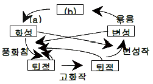
- 현무암
- 화강암
- 편마암
- 천매암
(정답률: 48%)
37. 셰일(shale)이 광역변성작용을 받으면 다음과 같은 순으로 변성정도가 큰 변성암이 생성된다. ( )안에 알맞은 것은?
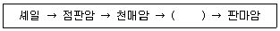
- 대리암
- 슬레이트
- 편암
- 혼펠스
(정답률: 62%)
38. 암석이 변성작용을 받을 때 암석 내에서 일어나는 작용으로 옳지 않은 것은?
- 압쇄작용
- 재결정작용
- 교대작용
- 분별정출작용
(정답률: 50%)
39. 퇴적물이 퇴적분지에 운반 퇴적된 후 단단한 암석으로 굳어지기까지의 물리 화학적 변화를 포함하는 일련의 변화과정을 무엇이라 하는가?
- 분화작용
- 교결작용
- 속성작용
- 재결정작용
(정답률: 46%)
40. 현무암에서와 같이 암석에 크고 작은 구멍이 다른 광물로 채워져서 만들어지 구조는?
- 유상구조
- 구상구조
- 다공질구조
- 행인상구조
(정답률: 41%)
3과목: 암석 및 지질
41. 중생대 쥐라기 말기에 한반도에서 일어나 지질시대 중 가장 강력한 조산 운동은 무엇인가?
- 송림조산운동
- 연일조산운동
- 대보조산운동
- 묘봉조산운동
(정답률: 50%)
42. 현무암질 마그마의 분화작용에 따른 암석의 생성순서로 옳은 것은?
- 화강암 → 섬록암 → 반려암
- 섬록암 → 화강암 → 반려암
- 화강암 → 반려암 → 섬록암
- 반려암 → 섬록암 → 화강암
(정답률: 53%)
43. 다음 중 염기성인 동시에 심성암에 해당되는 것은?
- 유문암
- 반려암
- 현무암
- 섬록암
(정답률: 23%)
44. 다음과 같은 특징을 가지고 있는 암석은?
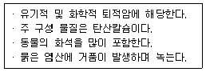
- 셰일
- 석회암
- 응회암
- 석탄
(정답률: 53%)
45. 다음 중 쇄설성 퇴적암으로만 나열된 것은?
- 역암, 각력암
- 셰일, 응회암
- 쳐트, 규조토
- 석고, 암염
(정답률: 29%)
46. 배사와 향사가 반복되는 경우 습곡축면과 양쪽날개의 경사방향이 같은 방향으로 거의 평행하게 기울어져 있는 습곡은?
- 경사 습곡
- 복배사
- 침강 습곡
- 등사 습곡
(정답률: 25%)
47. 지하수가 이동할 때는 퇴적작용보다 침식작용이 더 현저하게 일어나는데 지하수에 포함된 성분 중 침식작용에 관여하는 것은?
- 이황화탄소(CS2)
- 이산화탄소(CO2)
- 이산화황(SO2)
- 이산화질소(NO2)
(정답률: 48%)
48. 다음 중 화성암의 주성분 광물에 해당하는 것은?
- 인회석
- 저어콘
- 각섬석
- 자철석
(정답률: 48%)
49. 다음 그림은 어떤 지질구조를 나타낸 것인가?
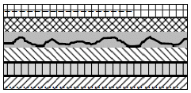
- 트러스트
- 부정합
- 습곡
- 단층
(정답률: 47%)
50. 다음 중 평균적으로 화성함에 가장 많이 포함되어 있는 화학성분은?
- Al2O3
- FeO
- CaO
- H2O
(정답률: 34%)
51. 기존 암석 중의 틈을 따라 관입한 판상의 화성암체를 무엇이라 하는가?
- 암판
- 암주
- 암맥
- 암경
(정답률: 55%)
52. 다음 평면도와 같은 지형을 AB로 자른 단면도는?
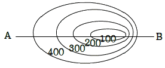
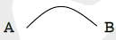
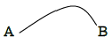
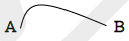
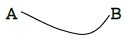
(정답률: 50%)
53. 암석이 광역변성작용을 받으면 온도와 압력의 변화로 광물 알갱이들이 평행한 배열을 하게 되는데 이러한 구조를 무엇이라 하는가?
- 엽리
- 층리
- 절리
- 암맥
(정답률: 37%)
54. 유수 및 파도의 작용으로 침식되고 운반된 물질이 수저에 퇴적된 암석 중 점토질암에 해당되는 암석은?
- 역암
- 각력암
- 사암
- 이암
(정답률: 22%)
55. 다음 ( )안에 알맞은 내용은 무엇인가?
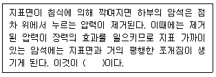
- 주상절리
- 판상절리
- 침식절리
- 압축절리
(정답률: 37%)
56. 광물조성은 화강암과 같으나 평행구조를 가진 것이 특징인 변성암은?
- 압쇄암
- 화강편마암
- 혼펠스
- 천매암
(정답률: 43%)
57. 주향이 북에서 55°서, 경사가 남동으로 60°일 경우 주향, 경사의 기입법으로 옳은 것은?
- N55°E, 66°SE
- E55°S, 60°SE
- 55°NE, S60°E
- 55°NE, E60°S
(정답률: 42%)
58. 현미경으로도 미정이 거의 발견되지 않고 전부 비결정질로 되어 있는 화성암의 조직은?
- 반상조직
- 문상조직
- 유지질조직
- 현정질조직
(정답률: 48%)
59. 상반이 하반에 대하야 상대적으로 하향 이동한 단층으로 단층면의 경사각이 일반적으로 45°∼90°인 것은?
- 정단층
- 역단층
- 오버드러스트
- 회전단층
(정답률: 46%)
60. 다음 중 변성암에서 볼수 없는 조직은?
- 엽리조직
- 다이아블라스틱 조직
- 반상조직
- 입상변정질 조직
(정답률: 22%)
1/전체저항값 = 1/1.4 + 1/1.4 + ... + 1/1.4 (10개)
전체저항값 = 1 / (1/1.4 + 1/1.4 + ... + 1/1.4) (10개)
전체저항값 = 0.14[Ω]
전류는 2[A]이므로, 전압은 V = IR = 2[A] x 0.14[Ω] = 0.28[V] 입니다.
하지만, 발파모선의 저항값과 발파기의 내부저항값도 고려해야 합니다.
발파모선의 저항값은 1m당 0.021[Ω]이므로, 총연장이 100m이므로 2.1[Ω]의 저항이 발생합니다.
발파기의 내부저항은 0[Ω]이므로 고려하지 않아도 됩니다.
따라서, 전압은 V = IR + V모선 = 2[A] x 0.14[Ω] + 2.1[Ω] = 0.28[V] + 2.1[V] = 2.38[V] 입니다.
하지만, 문제에서 요구하는 것은 제발시키려면 소요전압이므로, 이 값을 전체 병렬회로에 대입하여 전압을 구합니다.
전압 = 소요전압 x 전류 = V x 2[A]
2.38[V] = 소요전압 x 2[A]
소요전압 = 2.38[V] / 2[A] = 1.19[V]
하지만, 이 값은 전체 병렬회로에 대한 소요전압이므로, 문제에서 요구하는 것처럼 10개의 전기뇌관에 대한 소요전압을 구하기 위해서는 다시 병렬저항공식을 이용해야 합니다.
1/전체저항값 = 1/1.4 + 1/1.4 + ... + 1/1.4 (10개)
전체저항값 = 1 / (1/1.4 + 1/1.4 + ... + 1/1.4) (10개)
전체저항값 = 0.14[Ω]
전류는 2[A]이므로, 전압은 V = IR = 2[A] x 0.14[Ω] = 0.28[V] 입니다.
따라서, 10개의 전기뇌관에 대한 소요전압은 0.28[V] x 10 = 2.8[V] 입니다.
하지만, 이 값은 발파모선의 저항값과 발파기의 내부저항값을 고려하지 않은 값이므로, 다시 계산해야 합니다.
전압 = 소요전압 x 전류 = V x 2[A]
2.38[V] = 소요전압 x 2[A]
소요전압 = 2.38[V] / 2[A] = 1.19[V]
전압 = 소요전압 x 전류 + V모선 = 1.19[V] x 2[A] + 2.1[V] = 4.48[V]
따라서, 10개의 전기뇌관에 대한 제발시키려면 소요전압은 4.48[V]이므로, 정답은 "44.8 [V]"입니다.